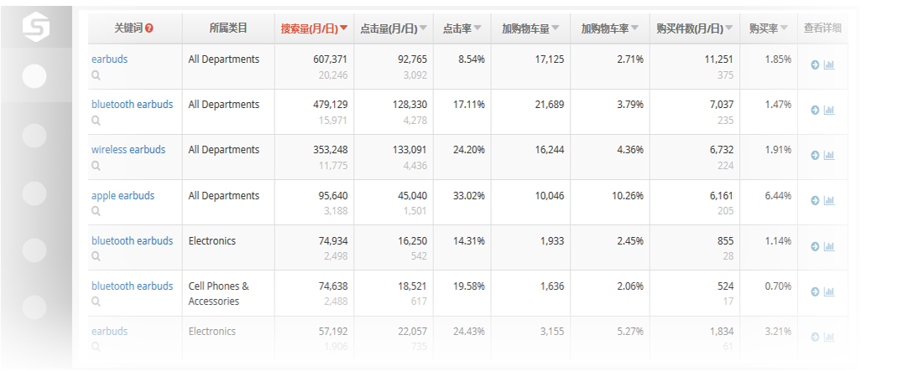
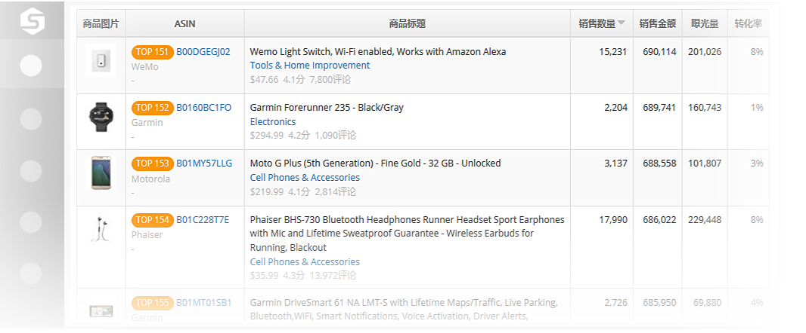
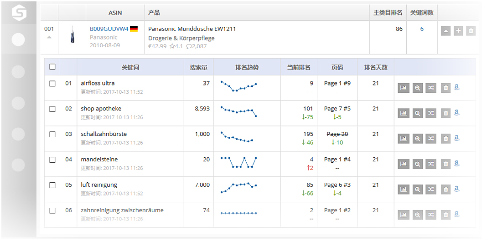
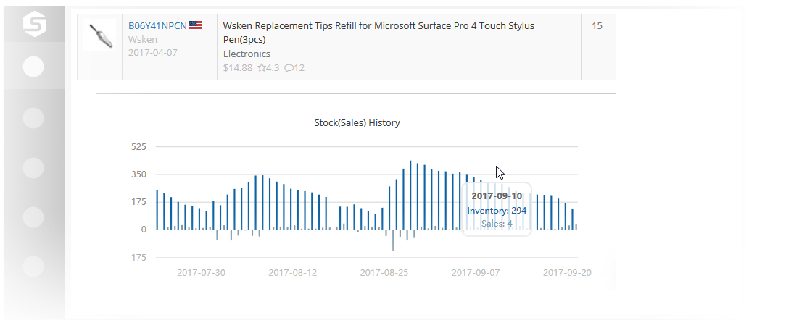
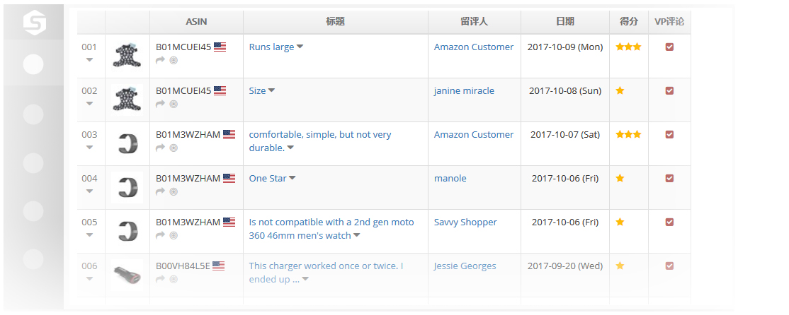
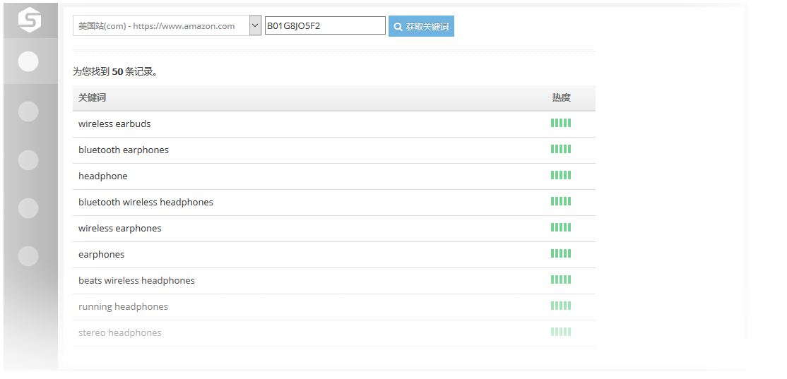
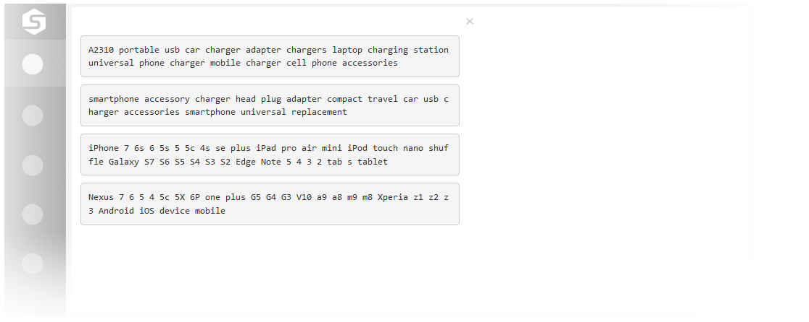
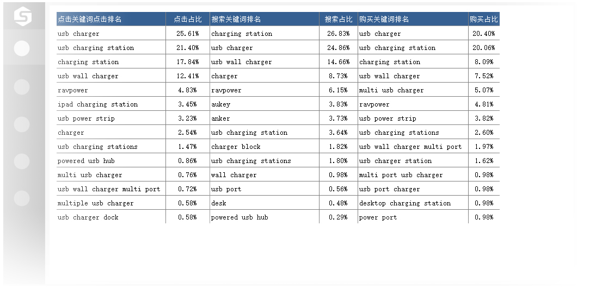

|
还在用Merchant Words、Keyword Tools来查询亚马逊关键词热度？还在用PPC广告词做Listing优化？太Low了！ 卖家精灵关键词揭秘工具，把这些工具甩出三条街，直接告诉您每个关键词的真实搜索量、销量；而且，关键词的搜索人数、加购物车率、点击Listing后的关联点击率都给您拔出来… 还不止这些，它还是一份宇宙无敌的关键词选品工具，告诉您各类目Top 20000的关键词及每个关键词的出单情况，对于擅长打游击/追热点的卖家，想知道哪些词飙升最快？想知道某词最近几个月的搜索趋势？我们都可以给您！偷偷告诉您，Keyword Tools付费工具，我们免费提供，您发现了吗？ 游客免费试用：点击进入  |
|---|
|
您或许用过亚马逊选品网红Jungle Scout，也用过大名鼎鼎的amzscout Chrome插件，它们可以告知您任意热门Listing的销量，但遗憾的是，它们只是Estimated Sales，预测数据还卖得这么贵？就是这么贵，爱买不买。 卖家精灵推出的大数据选品工具，秒杀同行，因为我们可以提供亚马逊任意类目最多Top 60000任意ASIN的真实销量； 我们不仅提供大类目BSR Top 6万的选品工具，还提供三级子类目的真实销量查询，当您选品定位在flashlight（手电筒）时，是否想知道该子类目下Top 50的产品销量（周销量），这时候选品才真正落地。 不急，远远不止这些，您还可以搜索任何Brand、Seller的所有热销产品的当前销量以及历史销量，是不是太疯狂了？ 这么牛叉的工具，是不是好贵？可以单项购买，不到20美金/月。 游客免费试用：点击进入  |
|---|
|
了解成都云雅的卖家都知道，成都云雅是玩黑科技起家的，网络爬虫技术是其杀手锏，曾经有高达120+台服务器在全负荷跑。 卖家精灵关键词监控工具，真的不忽悠，用的都说好。它不只是关键词监控工具，还自动帮您查询该关键词的最近12个月的月度搜索量、该关键词的竞争度、Google CPC价格(别忘了Google广告价格比亚马逊CPC更便宜，做垂直网站卖家的最爱)。 另外，我们还有很多很多您没有听说的大数据绝密武器，比如某店铺投放的的CPC广告数据、类目Top 2万关键词，这些都是增值服务、个性化服务哦，不免费嘀～ 游客免费试用：点击进入  |
|---|
|
了解对手的真实销量数据，是选品、运营和推广的必修课，拿到对手销量有很多种方式，比如卖家精灵提供的大数据选品工具，但它主要针对热门Listing； 也可以静距离观察某个Listing的历史销量数据，比如ASIN报告数据(搜索相关)、ASIN出货数据，但它们一般都是针对行业标杆产品； 一般来说，如果您是一个新卖家，或是一个老猎人想时刻盯住您的猎物（竞品）的动静，它从上新第一天开始，怎么慢慢成长为爆款的，您去跟进它的运营、推广策略，看它每天的库存、销量、BSR类目排名变化、评论数量增长情况，学它的成长套路。提示：上面说到的几种得到对手销量的方式，您都Get到了吗？ 游客免费试用：点击进入  |
|---|
|
一个差评带来的后果，基本上要10个好评才能抵消，这也是卖家精灵团队通过海量卖家大数据摸索出的规律，而且在被差评后大概7天，如果该产品每天出单3-5件，会突然不出单，而且关键词排名瞬间下降甚至消失 当您使用卖家精灵的差评监控服务后，当有1-3星差评是，我们会第一时间给您发送邮件，让你破解被动局面； 另外，我们会提供定位到该订单差评用户及找出其邮箱的功能，并提供一键发送邮件的功能。 游客免费试用：点击进入  |
|---|
|
优化Listing的第一步，就是确定该产品的核心关键词？凭感觉猜？去对手Title上摘取？去亚马逊搜索下拉框找推荐词？ 最好的方式我告诉您：就是去找5-10个竞品，去查询它的核心搜索流量词，把这些核心词嵌入自己产品的标题、卖点和Search Terms里，别忘了Description大量渗入。 还有一个妙用是：对于新进入一个品类的卖家，去拿该品类的标杆产品10个左右，通过关键词反查工具得到核心流量词，去我们的“关键词揭秘”工具，查询这些词的搜索量和购买量，以及历史趋势，评估该产品的市场潜力 游客免费试用：点击进入  |
|---|
|
推广的前提，是做好了Listing优化，而Listing优化的第一步，是了解行业标杆竞品的Listing的Title、BP、Description以及Search Terms的设置，其中，唯有Search Terms是不可见的； 卖家精灵的ST工具，就是为了解决这个问题而生。 唯一要说明的是，该工具不是完全免费的，但比同行要便宜很多。 游客免费试用：点击进入  |
|---|
|
ASIN报告数据，来源于亚马逊A9(亚马逊搜索引擎)，也就是亚马逊搜索类数据，它包括该ASIN核心搜索关键词、点击关键词、加购物车关键词、产生购买的关键词，以及各关键词的搜索类目占比；用这些关键词去优化自己的Listing，是不是一步到位？ 另外，它会提供该ASIN的历史每天的真实(搜索端)销量数据，让您见证一个Listing怎么从0到1，从1到100的蜕变过程。 当您拿到该数据后，建议再拿一份该ASIN销量数据，这样就完美了，因为搜索销量一般占该ASIN整体销量的40%左右。 如果您要打造爆款，不知道行业标杆Listing的销量上限，怎么做工厂生产、推广计划、推广预算呢？ 游客免费试用：点击进入  |
|---|
周一至周五 9:00-18:00(其它时间请留言，建议电话咨询)
王小姐，专人对接
卖家精灵微信号
QQ群：261790221
卖家精灵官方微信

地址：成都市高新区 天府五街200号 天府软件园F区 1号楼A座6楼
电话：028-85142468(周一~周五 9:30~18:00)
邮箱：ask@iyunya.com
手机：139-2420-4586
微信：13982270865
Q Q：88483017
成都云雅成立于2013年2月，专注于Amazon卖家服务软件的研发和运营。
成都云雅已经成功研发出亚马逊关键词排名优化软件、亚马逊数据监控和大数据服务相关产品，在亚马逊卖家群体有很好的口碑。至今已经服务超过8000+客户，在亚马逊生态圈内，形成了良好的合作伙伴关系。
Copyright © 2013-2018 成都云雅信息技术有限公司
专注于亚马逊卖家服务软件的研发和运营